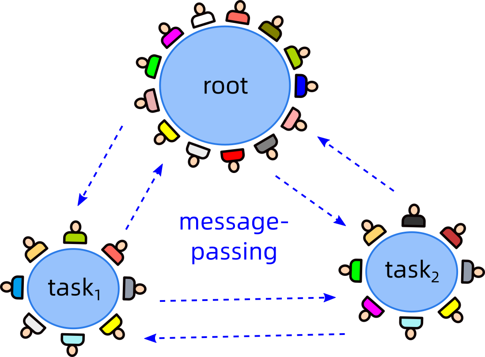

Aragon manages tokens, but is not responsible for "content"-related things.
This is the Voting demo, it automatically adjusts the total to 100:
On Git side, we need a way to "visualize" each member's contributions, so other members can conveniently estimate their worth.
Note: We're using Git's API to access repository data, this can be done independently of GitHub.
We want to support the visualization of several file formats, especially those with well-established standards:
Other file types, since they cannot be visualized, cannot be examined for partial contributions, so they must be treated as single units.
The following is a demo of "visualizing" Git repository files: (demo data is randomly generated)
Name: Claris
Tokens: 10,000
Files
Similarly, we can click into a document: (demo not yet ready)
Name: Claris
Tokens: 10,000
The purpose of IRC / Discord is to provide "chatrooms". Each cluster has its own chatroom, they can pass messages to each other:
Links in this Project Graph are not too important, since any cluster can send messages to any other cluster, if such needs arise.
If ProjectGraph does not display, please start the server via:
cd python
python start-ProjectGraph-server.py
But you also need to install VisDCC first:
pip install visdcc
pip install dash==2.3.0
Buttons:
Link Nodes: Mouse click on nodes ① & then ②, then click button to
link them.
Create / Update Nodes: Fill out information, then choose node ①,
and click button.